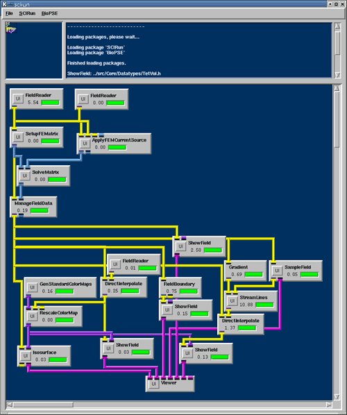
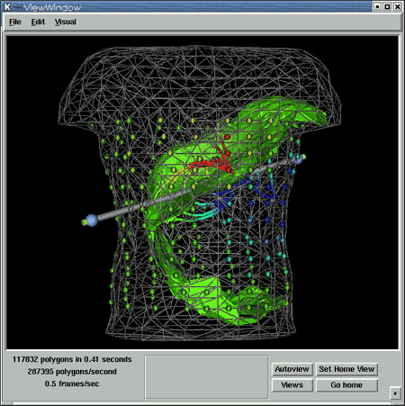

|
Chapter 6: Putting Simulation and Visualization Together
Chapter Overview In Chapters 1-4, we constructed a set of visualization
networks to explore scalar and vector Fields. In the previous chapter,
we implemented a network to solve a bioelectric finite element problem.
The output of that network was a solution vector, In this chapter, we will put these two pieces together. We will reuse the finite element simulation network from Chapter 5, as well as the visualization network from Chapter 4. The only missing piece is a module that can connect the solution vector of scalar values to the nodes of the tetrahedral finite element mesh. The module ManageFieldData accomplishes this task, as described below. The ManageFieldData module splits its Field input and then combines it with its Matrix input and creates a new Field and Matrix output:
Combining simulation and
visualization Combining the finite element simulation net from Chapter 5, (Figure 5.2). with the visualization net from Chapter 4, (Figure 4.1), and adding a ManageFieldData module between them, you should have a net that looks like that in Figure 6.1. 
Executing the network, you should have an image in your ViewWindow that looks like Figure 6.2. 
SummaryIn this chapter, we have combined two pieces, reusing the finite element simulation network from Chapter 5, as well as the visualization network from Chapter 4. We have used a module that connects the solution vector of scalar values to the nodes of the tetrahedral finite element mesh, via the module ManageFieldData. In Chapter 7, we will add a feedback module and interactively visualize the results. |